Nos actions — 03
Reportages
Longs métrages, web-séries et courts métrages narrant nos expéditions scientifiques.
Longs métrages, web-séries et courts métrages narrant nos expéditions scientifiques.
Embarquez à bord du Virus, un petit planeur à moteur bourré de technologies, avec Clémentine et Adrien pour leur tour du monde au service de la science. Du cercle arctique aux volcans d'Indonésie, de la Patagonie aux déserts d'Australie : un an de vol, 54 000 km et une quarantaine de missions scientifiques, aux côtés de chercheurs tous plus sympathiques les uns que les autres.
Coproduction Wings for Science, Universcience, Gedeon Programmes. Diffusé sur Planète Thalassa et Le Blob.
Embarquez avec nous à bord du petit planeur à moteur pour notre tour du monde au service de la science : un an de vol, 54 000 km et une quarantaine de missions scientifiques.
Des scientifiques racontent leur métier, filmés en plein travail dans des décors naturels à couper le souffle. Pour donner envie aux jeunes d'explorer, de comprendre et de protéger notre planète.
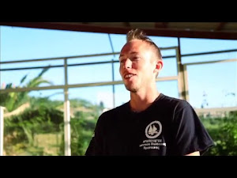
Ép. 1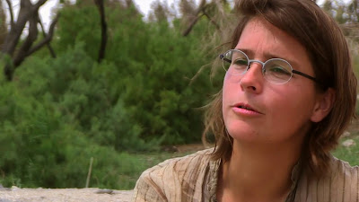
Ép. 2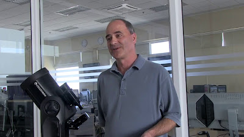
Ép. 3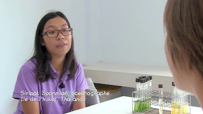
Ép. 4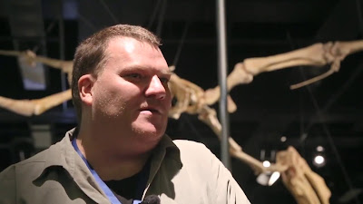
Ép. 5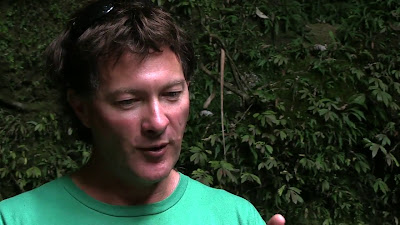
Ép. 6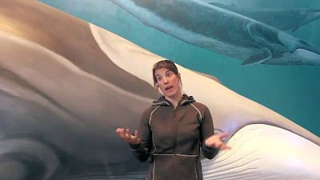
Ép. 7 Ép. 8
Ép. 8 Ép. 9
Ép. 9Plongez au cœur de nos missions de terrain : comment on collecte des données scientifiques aux quatre coins du globe, au service des chercheurs qui protègent la planète.
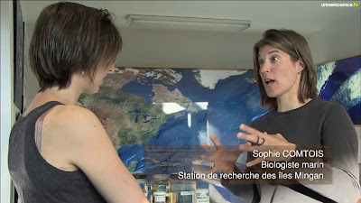
Ép. 1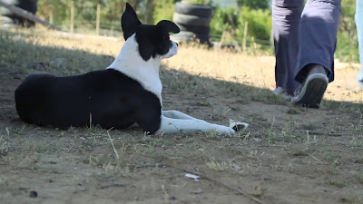
Ép. 2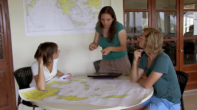
Ép. 3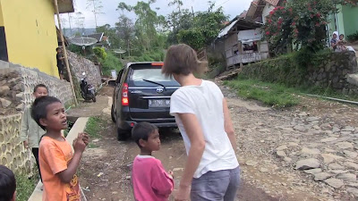
Ép. 4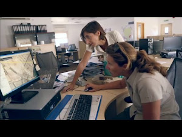
Ép. 5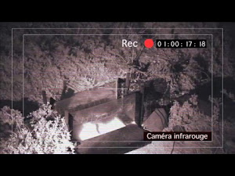
Ép. 6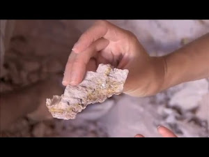
Ép. 7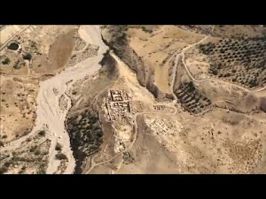
Ép. 8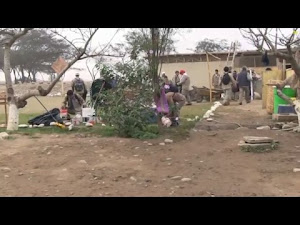
Ép. 9Des images aériennes à couper le souffle de chaque zone géographique survolée, avec un message inspirant et éducatif sur l'environnement et les enjeux locaux.
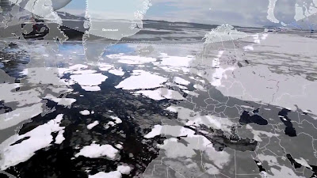
Ép. 1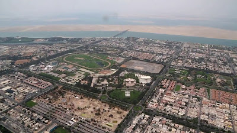
Ép. 2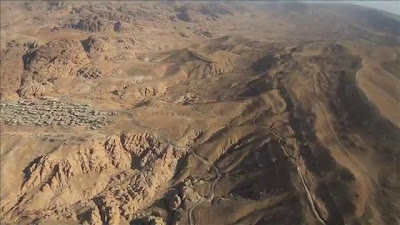
Ép. 3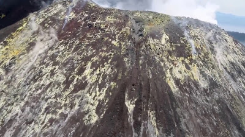
Ép. 4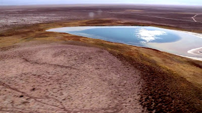
Ép. 5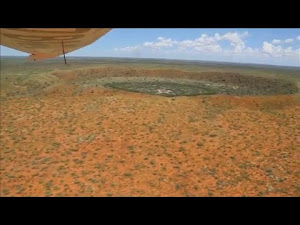
Ép. 6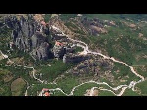
Ép. 7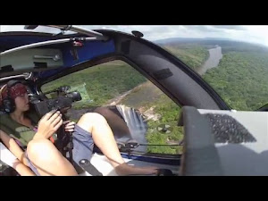
Ép. 8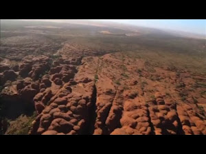
Ép. 9